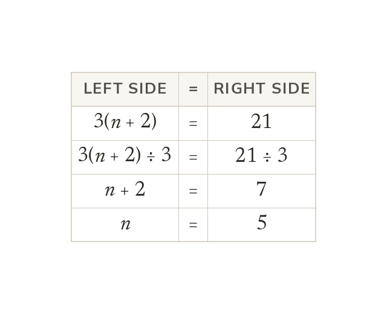

Two routes into a bracket
Solve a bracket equation by expanding, or by dividing both sides first. Dividing first suits only a right side that divides exactly.
An equation with a bracket can be solved by expanding it first, or by dividing both sides by the number outside. Dividing first is quicker only when every term on the other side divides exactly by that number.